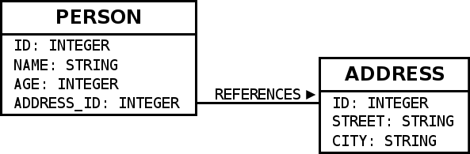

Coming from SQL to Slick
Coming from JDBC/SQL to Slick is pretty straight forward in many ways. Slick can be considered as a drop-in replacement with a nicer API for handling connections, fetching results and using a query language, which is integrated more nicely into Scala than writing queries as Strings. The main obstacle for developers coming from SQL to Slick seems to be the semantic differences of seemingly similar operations between SQL and Scala‘s collections API which Slick’s API imitates. The following sections give a quick overview over the differences. They start with conceptual differences and then list examples of many SQL operators and their Slick equivalents. For a more detailed explanations of Slick’s API please refer to chapter queries and the equivalent methods in the the Scala collections API.
Schema
The later examples use the following database schema

mapped to Slick using the following code:
Tables can alternatively be mapped to case classes. Similar code can be auto-generated or hand-written.
Queries in comparison
JDBC Query
A JDBC query with error handling could look like this:
Slick gives us two choices how to write queries. One is SQL strings just like JDBC. The other is type-safe, composable queries.
Slick Plain SQL queries
This is useful if you either want to continue writing queries in SQL or if you need a feature not (yet) supported by Slick otherwise. Executing the same query using Slick Plain SQL, which has built-in error-handling and resource management optimized for asynchronous execution, looks like this:
.list returns a list of results. .first a single result. .foreach can be used to iterate over the results without ever materializing all results at once.
Slick type-safe, composable queries
Slick’s key feature is type-safe, composable queries. Slick comes with a Scala-to-SQL compiler, which allows a (purely functional) sub-set of the Scala language to be compiled to SQL queries. Also available are a subset of the standard library and some extensions, e.g. for joins. The familiarity allows Scala developers to instantly write many queries against all supported relational databases with little learning required and without knowing SQL or remembering the particular dialect. Such Slick queries are composable, which means that you can write and re-use fragments and functions to avoid repetitive code like join conditions in a much more practical way than concatenating SQL strings. The fact that such queries are type-safe not only catches many mistakes early at compile time, but also eliminates the risk of SQL injection vulnerabilities.
The same query written as a type-safe Slick query looks like this:
.run automatically returns a Seq for collection-like queries and a single value for scalar queries. .list, .first and .foreach are also available.
A key benefit compared to SQL strings is, that you can easily transform the query by calling more methods on it. E.g. query.filter(_.age > 18) returns transformed query which further restricts the results. This allows to build libraries of queries, which re-use each other become much more maintainable. You can abstract over join conditions, pagination, filters, etc.
It is important to note that Slick needs the type-information to type-check these queries. This type information closely corresponds to the database schema and is provided to Slick in the form of Table sub classes and TableQuery values shown above.
Main obstacle: Semantic API differences
Some methods of the Scala collections work a bit differently than their SQL counter parts. This seems to be one of the
main causes of confusion for people newly coming from SQL to Slick. Especially groupBy seems to be tricky.
The best approach to write queries using Slick’s type-safe API is thinking in terms of Scala collections. What would the code be if you had a Seq of tuples or case classes instead of a Slick TableQuery object. Use that exact code. If needed adapt it with workarounds where a Scala library feature is currently not supported by Slick or if Slick is slightly different. Some operations are more strongly typed in Slick than in Scala for example. Arithmetic operation in different types require explicit casts using .asColumnOf[T]. Also Slick uses 3-valued logic for Option inference.
Scala-to-SQL compilation during runtime
Slick runs a Scala-to-SQL compiler to implement its type-safe query feature. The compiler runs at Scala run-time and it does take its time which can even go up to second or longer for complex queries. It can be very useful to run the compiler only once per defined query and upfront, e.g. at app startup instead of each execution over and over. Compiled queries allow you to cache the generated SQL for re-use.
Limitations
When you use Slick extensively you will run into cases, where Slick’s type-safe query language does not support a query operator or JDBC feature you may desire to use or produces non-optimal SQL code. There are several ways to deal with that.
Missing query operators
Slick is extensible to some degree, which means you can add some kinds of missing operators yourself.
Definition in terms of others
If the operator you desire is expressible using existing Slick operations you can simply write a Scala function or implicit class that implements the operator as a method in terms of existing operators. Here we implement squared using multiplication.
Definition using a database function
If you need a fundamental operator, which is not supported out-of-the-box you can add it yourself if it operates on scalar values. For example Slick currently does not have a power method out of the box. Here we are mapping it to a database function.
More information can be found in the chapter about Scalar database functions.
You can however not add operators operating on queries using database functions. The Slick Scala-to-SQL compiler requires knowledge about the structure of the query in order to compile it to the simplest SQL query it can produce. It currently couldn‘t handle custom query operators in that context. (There are some ideas how this restriction can be somewhat lifted in the future, but it needs more investigation). An example for such operator is a MySQL index hint, which is not supported by Slick’s type-safe API and it cannot be added by users. If you require such an operator you have to write your whole query using Plain SQL. If the operator does not change the return type of the query you could alternatively use the workaround described in the following section.
Non-optimal SQL code
Slick generates SQL code and tries to make it as simple as possible. The algorithm doing that is not perfect and under continuous improvement. There are cases where the generated queries are more complicated than someone would write them by hand. This can lead to bad performance for certain queries with some optimizers and DBMS. For example, Slick occasionally generates unnecessary sub-queries. In MySQL <= 5.5 this easily leads to unnecessary table scans or indices not being used. The Slick team is working towards generating code better factored to what the query optimizers can currently optimize, but that doesn’t help you now. To work around it you have to write the more optimal SQL code by hand. You can either run it as a Slick Plain SQL query or you can use a hack, which allows you to simply swap out the SQL code Slick uses for a type-safe query.
SQL vs. Slick examples
This section shows an overview over the most important types of SQL queries and a corresponding type-safe Slick query.
SELECT *
SQL
Slick
The Slick equivalent of SELECT * is the result of the plain TableQuery:
SELECT
SQL
Slick
Scala’s equivalent for SELECT is map. Columns can be referenced similarly and functions operating on columns can be accessed using their Scala equivalents (but allowing only ++ for String concatenation, not +).
.. index:: WHERE, filter, or, and, &&, ||, ==
WHERE
SQL
Slick
Scala’s equivalent for WHERE is filter. Make sure to use === instead of == for comparison.
ORDER BY
SQL
Slick
Scala‘s equivalent for ORDER BY is sortBy. Provide a tuple to sort by multiple columns. Slick’s .asc and .desc methods affect the ordering. Be aware that a single ORDER BY with multiple columns is not equivalent to multiple .sortBy calls but to a single .sortBy call passing a tuple.
Aggregations (max, etc.)
SQL
Slick
Aggregations are collection methods in Scala. In SQL they are called on a column, but in Slick they are called on a collection-like value e.g. a complete query, which people coming from SQL easily trip over. They return a scalar value, which can be run individually. Aggregation methods such as max that can return NULL return Options in Slick.
GROUP BY
People coming from SQL often seem to have trouble understanding Scala‘s and Slick’s groupBy, because of the different signatures involved. SQL‘s GROUP BY can be seen as an operation that turns all columns that weren’t part of the grouping key into collections of all the elements in a group. SQL requires the use of its aggregation operations like avg to compute single values out of these collections.
SQL
Slick
Scala’s groupBy returns a Map of grouping keys to Lists of the rows for each group. There is no automatic conversion of individual columns into collections. This has to be done explicitly in Scala, by mapping from the group to the desired column, which then allows SQL-like aggregation.
SQL requires aggregation of grouped values. We require the same in Slick for now. This means a groupBy call must be followed by a map call or will fail with an Exception. This makes Slick‘s grouping syntax a bit more complicated than SQL’s.
HAVING
SQL
Slick
Slick does not have different methods for WHERE and HAVING. For achieving semantics equivalent to HAVING, just use filter after groupBy and the following map.
Implicit inner joins
SQL
Slick
Slick generates SQL using implicit joins for flatMap and map or the corresponding for-expression syntax.
Explicit inner joins
SQL
Slick
Slick offers a small DSL for explicit joins.
Outer joins (left/right/full)
SQL
Slick
Outer joins are done using Slick’s explicit join DSL. Be aware that in case of an outer join SQL changes the type of
outer joined, non-nullable columns into nullable columns. In order to represent this in a clean way even in the
presence of mapped types, Slick lifts the whole side of the join into an Option. This goes a bit further than the
SQL semantics because it allows you to distinguish a row which was not matched in the join from a row that was
matched but already contained nothing but NULL values.
Subquery
SQL
Slick
Slick queries are composable. Subqueries can be simply composed, where the types work out, just like any other Scala code.
The method .in expects a sub query. For an in-memory Scala collection, the method .inSet can be used instead.
Scalar value subquery / custom function
SQL
Slick
This code shows a subquery computing a single value in combination with a user-defined database function.
insert
SQL
Slick
Inserts can be a bit surprising at first, when coming from SQL, because unlike SQL, Slick re-uses the same syntax that
is used for querying to select which columns should be inserted into. So basically, you first write a query and instead
of creating an Action that gets the result of this query, you call += on with value to be inserted, which gives you
an Action that performs the insert. ++= allows insertion of a Seq of rows at once. Columns that are auto-incremented
are automatically ignored, so inserting into them has no effect. Using forceInsert allows actual insertion into
auto-incremented columns.
update
SQL
Slick
Just like inserts, updates are based on queries that select and filter what should be updated and instead of running the query and fetching the data .update is used to replace it.
delete
SQL
Slick
Just like inserts, deletes are based on queries that filter what should be deleted. Instead of getting the query result
of the query, .delete is used to obtain an Action that deletes the selected rows.
CASE
SQL
Slick
Slick uses a small DSL to allow CASE like case distinctions.